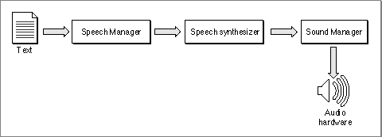

Important: Inside Macintosh: Sound is deprecated as of Mac OS X v10.5. For new audio development in Mac OS X, use Core Audio. See the Audio page in the ADC Reference Library.
About the Speech Manager
You can use the Speech Manager to incorporate synthesized speech into your application. This section provides an overview and describes the basic concepts of the Speech Manager, and it outlines the process that the Speech Manager uses to convert text into speech. The Speech Manager converts text into sound data, which it passes to the Sound Manager to play through the current sound output device. The Speech Manager's interaction with the Sound Manager is transparent to your application, so you don't need to be familiar with the Sound Manager to take advantage of the Speech Manager's capabilities.Figure 4-1 illustrates the speech generation process. Your application can initiate speech generation by passing a string or a buffer of text to the Speech Manager. The Speech Manager is responsible for sending the text to a speech synthesizer, a component that contains executable code that manages all communication between the Speech Manager and the Sound Manager. A synthesizer is usually contained in a resource in a file within the System Folder. A synthesizer is like a speech engine. It uses built-in dictionaries and pronunciation rules to help determine how to pronounce text. You can provide custom pronunciation dictionaries as described in the section "Including Pronunciation Dictionaries" beginning on page 4-36.
Figure 4-1 The speech generation process

As Figure 4-1 suggests, the Speech Manager is simply a dispatch mechanism that allows your application to take advantage of the capabilities of whatever speech synthesizers, voices, and hardware are installed. The Speech Manager itself does not do any of the work of converting text into speech; it just provides a convenient programming interface that manages access to speech synthesizers and, indirectly, to the sound hardware. The Speech Manager uses the Component Manager to access whatever speech synthesizers are available and allows applications to take maximum advantage of a computer's speech facilities without knowing what those facilities are. Because the Speech Manager's routines work on all voices and synthesizers, you will not need to rewrite your application to take advantage of improvements in speech technology.
Subtopics
- Voices
- Speech Attributes
- Speech Channels
- Callback Routines